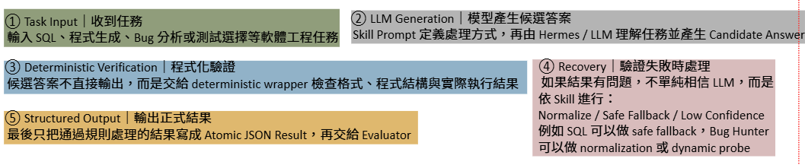

← 回作品集
LLM Agent / Verification / Software Engineering
Hermes AI Agent｜Verifiable Agent Skills
跨校（成大）生成式 AI 與應用期末專題
設計可驗證的 AI Agent Skills，讓 LLM 負責理解任務與產生候選答案，再透過 deterministic wrapper 進行格式、程式行為與結果驗證，降低「答案看起來合理但實際錯誤」的風險。
Why Verification?
為什麼不能直接相信 LLM？
LLM 可以產生 SQL、Python 程式與 Bug Report，但輸出看起來合理，不代表真的符合格式、能執行，或結果正確。
本專題因此將「生成」與「驗證」分離，讓 LLM 負責提出 Candidate Answer，由 deterministic wrapper 負責真正可檢查的正確性。
LLM Generation
Deterministic Verification
Validated Result
Overall Pipeline
生成答案後，必須進入可重跑的驗證流程
 Overall Pipeline
Overall Pipeline

Experimental OverviewThree-layer Architecture
三個角色怎麼分工
Hermes
Agent Runtime負責載入 Skill、呼叫 LLM、協調工具與任務流程。
LLM
Candidate Generation理解任務需求並產生候選答案。
Deterministic Wrapper
Verification & Execution清理、檢查、執行、Fallback，最後輸出正式 JSON。
LLM 負責「提出答案」，Wrapper 負責「證明答案可以被接受」。
Four Skill Verification Modules
四個可驗證 Agent Skills
01
Text2SQL
先限制，再驗證Question + SchemaLLM generates SQLSQL CleaningRead-only CheckSchema / EXPLAIN ValidationValid SQL / Safe Fallback
LLM：理解 Table、Join、Filter、Aggregation 等查詢語意。
Wrapper：檢查 Read-only Policy、Schema Validation、SQLite EXPLAIN 與 Safe Fallback。
02
Code Author
先生成，再執行檢查Task + Constraints + SamplesLLM generates Python FunctionAST ParseEntry / SLOC / Import CheckSample ExecutionSelect Best Candidate
LLM：產生符合 Task Description 與 Constraints 的 Python Function Candidate。
Wrapper：以 AST、Entry Point、Import Policy 與 Sample Execution 驗證其可執行性。
03
Bug Hunter
LLM 判斷 + 程式行為交叉驗證Task + Python CodeLLM proposes Bug ReportNormalize / Validate ReportDeterministic AuditCross-Verify FindingsFinal Bug Contract
LLM：提出可能的 Bug、位置與理由。
Wrapper：檢查 Line / Type / Severity，並透過 deterministic audit 與 Dynamic Probes 驗證。
04
Open Test Killer
有限 Test Budget 下選出最有效的測試Reference Code + Mutants + Candidate TestsExecute & CompareBuild Kill MatrixSelect Test SetExact Search / Greedy FallbackKill Rate
LLM / Input：提供 reference code、mutants 與 candidate tests。
Wrapper：實際執行測試建立 Kill Matrix，並在有限 Test Budget 下選出最佳測試集合。
Open Test Killer Example
用 Kill Matrix 選最有效的測試
在 Test Budget = 2 時，系統比較不同測試組合的 mutant coverage，選出能覆蓋最多錯誤版本的集合。
因此在 Test Budget = 2 時，系統選擇 A + B，可覆蓋全部 3 個 Mutants，Kill Rate = 100%。
| Tests | Kill Mutants | Budget = 2 |
|---|---|---|
| A | M1, M3 | A + B → 100% |
| B | M2 | A + C → 67% |
| C | M1 | B + C → 67% |
Experimental Results
實驗結果
Course Evaluation
91.38
Overall Project Score
外部課程評測：AIASE 2026 課程自動化評測結果，由成大課程端進行測評。
Basic Track – Text2SQL：30.0 / 30
Pairwise Track – Bug Hunter：8.33 / 10
Open Track：93.2 / 100
System Reliability
- Root Pytest：193 passed
- Code Author Self-test：45 / 45
- Bug Hunter Self-test：31 / 31
- Open Track Self-test：14 / 14
- Repository Verifier：27 / 27
透過 unit tests、self-tests、regression 與 repository verification，檢查輸出 contract、fallback、timeout 與 deterministic behavior。
Verification Effect
Bug Hunter0.500 → 0.800
Overall Weighted0.806 → 0.889
在相同 108 個 raw responses 上，Full Verification 明顯提高整體通過表現。
Open Test Killer
| Scenario | Exact | Greedy | Random |
|---|---|---|---|
| merge_intervals | 1.0 | 1.0 | 0.746 |
| top_k_frequent | 1.0 | 1.0 | 0.792 |
| valid_parentheses | 0.8 | 0.8 | 0.436 |
Exact 與 Greedy selection 在相同 Test Budget 下皆優於 Random Baseline。
Core Design Principle
LLM for Reasoning, Deterministic System for Trust
讓 LLM 負責需要語意理解與生成的部分，把能明確檢查的工作交給 deterministic verification。
生成不等於正確能驗證的就不要只靠模型判斷最終輸出必須具有明確 contract
What I Learned
實作收穫
Agent Workflow Design
將 Skill Prompt、LLM、Wrapper、Evaluator 串成完整 Agent Pipeline。
Verification-first Engineering
透過 deterministic check、tests 與 fallback 降低 LLM 不穩定輸出的風險。
Evaluation & Testing
使用 regression testing、mutation testing 與 benchmark 分析 Agent Skill 的正確性。
GitHub
Hermes AI Agent｜Verifiable Agent Skills
完整程式碼、Skill wrapper、測試與 benchmark 實驗皆整理於 GitHub repository。